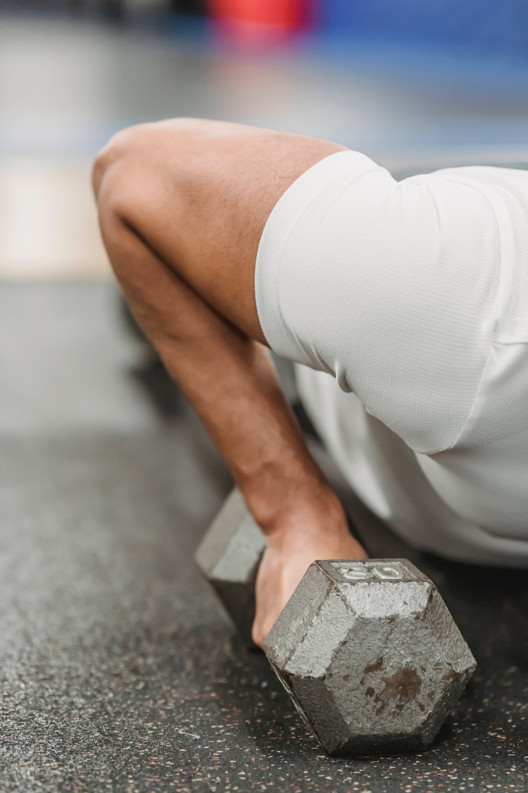
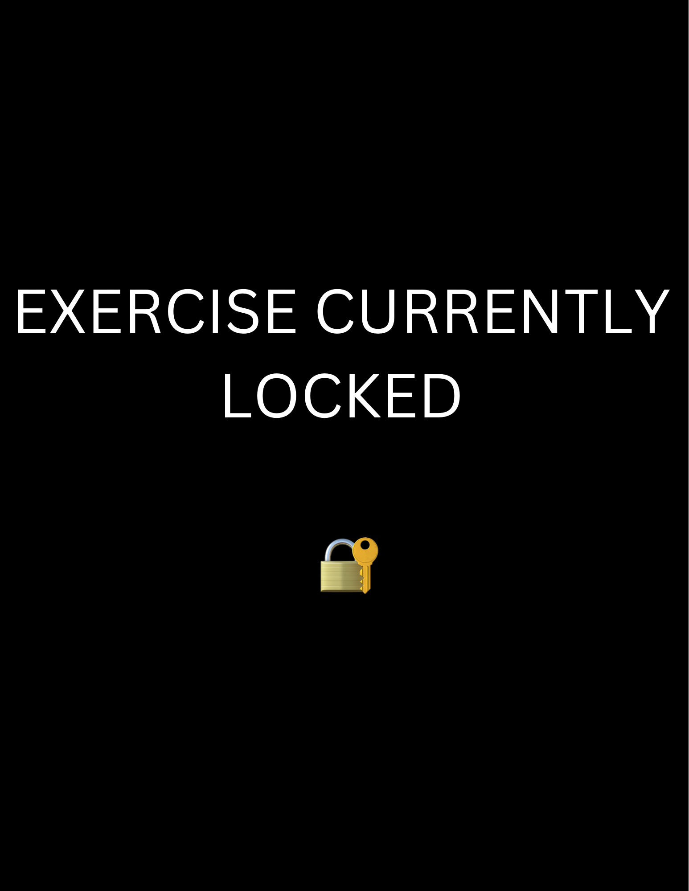

The pectoralis major, commonly referred to as the chest muscle, is a prominent and robust muscle group situated at the front of the upper torso. Its fibers spread out in a radial pattern, contributing to its unique shape. This muscle is crucial for various daily actions such as pushing, lifting, and embracing. It functions by drawing the arms toward the midline of the body, playing a key role in movements like embracing someone affectionately.
Bench Press: This classic exercise for the chest can be performed using either a barbell or dumbbells. It works out the entire chest area and is fundamental in chest training routines. Push-Ups: As a key bodyweight workout, push-ups effectively exercise the chest muscles. Adjusting the position of the hands can shift the focus to different parts of the chest.

Incline Bench Press: This variation of the bench press involves an angled bench, concentrating on the upper chest, contributing to comprehensive chest muscle growth.

Cable Crossovers: Executed on a cable machine, this exercise involves drawing cables across your body. It's particularly effective for stretching the chest, diversifying chest workout regimes.
The Front and Side Delts
The anterior/front deltoids, situated at the front of your shoulders, play a key role in moving your arms forward and up, like when reaching for items. Conversely, the lateral/side deltoids on the shoulder's outer side help raise your arm sideways. These muscles' fortification enhances shoulder steadiness, motion range, and overall power. Such strength is crucial for various daily tasks that involve lifting and reaching, and it contributes to a balanced development of shoulder muscles.
Military Press (Overhead Press): Engage in this workout by lifting either dumbbells or a barbell above your head while in a standing position. It mainly works the front deltoids, contributing significantly to the development of shoulder strength and size.
Front Raises: This targeted exercise involves raising dumbbells or a barbell straight ahead of you. It's focused on the anterior deltoid muscles and is effective both seated and standing.
Lateral Raises: This exercise entails lifting dumbbells or cables outward to your sides. It's an isolation workout focusing on the lateral deltoids, instrumental in broadening the shoulder area.
Cable Lateral Raises: Executed with a cable machine using either a single handle or rope attachment, this variation of lateral raises utilizes the consistent resistance of the cable, effectively concentrating on the side deltoids.
The Biceps
The biceps, or biceps brachii, are prominent muscles in the upper arm, known for contributing to a robust and sculpted appearance. Located at the front of the upper arm, these muscles operate in pairs and are primarily engaged when you bend your elbow, as seen in actions like lifting a grocery bag or performing bicep curls. Their primary function is to flex the forearm and draw the hand toward the shoulder. Strengthening the biceps not only improves the look of your arms but is also crucial for daily activities that require lifting or carrying.
Barbell Bicep Curl: Engage in this exercise by gripping a barbell with an underhand hold and curling it upwards, keeping your upper arms stationary.
Dumbbell Hammer Curl: Perform this by holding dumbbells with your palms facing towards your body and curling them towards your shoulders.
Preacher Curl: This involves using an E-Z curl bar and a preacher bench, allowing you to curl while comfortably resting your upper arms on the bench's pad.
The Forearms
The forearms, located between the elbow and wrist, comprise multiple small muscles that collectively enable wrist flexion and extension. These muscles are vital for everyday activities like typing, gripping, and aiding elbow flexion. They also regulate precise finger movements, essential for tasks requiring fine motor skills and strength, such as playing instruments or cooking. Forearm strengthening enhances grip strength and hand coordination, facilitating daily functions and specialized tasks more effectively.
Wrist Curls: This exercise focuses on flexing the wrist to lift a weight, effectively working the forearm flexor muscles, enhancing wrist strength and stamina.
Reverse Curls: By curling a barbell upwards with an overhand grip, reverse curls specifically target the brachioradialis in the forearm, strengthening the upper part of the forearm.
Farmer's Walks: Involving the carrying of heavy weights in each hand while walking, this exercise tests grip strength and activates the forearm muscles responsible for grip.
Dead Hangs: Performed by hanging from a bar with extended arms, dead hangs engage forearm muscles for grip maintenance, boosting endurance for activities like rock climbing.
The Core
The core muscles, located around the midsection, include the rectus abdominis, transverse abdominis, and obliques. These key muscles act as a central support for the body, engaging in various movements and stability functions. The rectus abdominis, known for creating the 'six-pack' appearance, aids in flexing the spine and stabilizing the torso. Meanwhile, the transverse abdominis functions similarly to a natural corset, reinforcing spinal stability and aiding in maintaining proper posture.
The obliques, encompassing both internal and external obliques, are situated along the sides of the torso. They play a crucial role in enabling the rotation and side bending of the trunk, facilitating body twists and balance in diverse activities. A robust and well-maintained core is fundamental for correct posture, equilibrium, and stability in daily actions like bending, twisting, and lifting. It's also vital in sports for agility and rotational movements. Engaging in core-strengthening exercises, such as planks and Russian twists, is key to maintaining the strength and functionality of these muscles, contributing significantly to overall physical health.
Crunches primarily target the "six-pack" rectus abdominis muscles. To perform, lie on your back, bend your knees, place hands behind your head, and lift your upper body towards your knees.
Planks activate the transverse abdominis, essential for spinal support. Maintain a push-up posture, aligning your body straight, resting on your forearms and toes.
Russian Twists work on the oblique muscles. Sit with bent knees, feet raised, and rotate your torso, holding a weight, touching the ground on each side.
Hanging Leg Raises focus on the lower abs. Hang with your arms from a bar, raise your legs without touching the ground, and lower back down.
The Quads
The quadriceps, commonly referred to as quads, are the primary muscles on the front part of the thigh. They play a key role in extending the knee and straightening the leg. Engaged in activities like rising from a seated position, stair climbing, or kicking, these powerful muscles are essential for movements involving the legs. Maintaining strength and flexibility in the quadriceps is beneficial for daily tasks and improves performance in activities such as running, cycling, and jumping.
Squats: An excellent exercise for quadriceps, squats involve standing with feet shoulder-width apart, bending the knees and hips to lower the body, and then rising to stand.
Lunges: Focused on the quads and additional leg muscles, lunges may involve a forward step followed by bending both knees until they form right angles, alternating between legs.
Leg Press: Tailored for the quads, the leg press machine involves sitting and pushing weight by extending the knees, then returning to the initial position.
The Hamstrings
The hamstrings, located at the back of the thigh, are essential for bending the knee and hip extension. These muscles are engaged during activities like walking, running, and climbing, and they regulate the pace of leg movements. Strengthening the hamstrings enhances not just athletic prowess but also daily actions such as standing up and walking with ease.
Deadlifts effectively engage the hamstrings and other muscles. Begin by standing near a barbell with feet hip-width apart, bend your hips and knees to reach the barbell, then lift it by straightening your hips and knees.
Leg Curls focus on the hamstrings and can be performed using a machine or resistance bands. For this exercise, either lie on a leg curl machine or set up with a resistance band, then curl your legs towards your glutes against the resistance before returning to the start position.
The Calves
The calf muscles, situated at the lower leg's rear, are essential for aiding in ground lift-off during activities like walking and sprinting. These muscles are crucial for motion-based tasks and lifting the body, as well as playing a key role in balance and stability. Enhanced calf muscle strength can lead to improved leg power and more effortless performance of daily activities.
Calf Raises focus on enhancing the calf muscles. Stand on your toes, then elevate your heels as high as possible and lower them. This exercise boosts calf muscle strength and definition.
Sprinting, a vigorous cardio workout, involves fast-paced running over short distances. It enhances cardiovascular health, muscle endurance, and power. Sprinting works various muscles, including legs, core, and upper body, for a comprehensive workout. It's effective for weight management, metabolic enhancement, and athletic skill improvement, also rapidly elevating heart rate and calorie burn.
The Gluteus
The gluteus muscles, located in the buttocks, are pivotal in various movements including standing, walking, running, and sitting. They extend the hip joint and assist in rotating the thigh outward. Glutes are crucial for upright posture, pelvic stability, and power generation in activities like stair climbing and sprinting. Strengthening them boosts lower body strength and overall physical prowess.
Squats effectively target the lower body, engaging quadriceps, hamstrings, glutes, and lower back. The technique involves a shoulder-width stance, core engagement, and lowering the body by bending knees and hips, maintaining a straight back and upright chest. The movement descends until thighs are parallel to the ground, then pushes up through the heels.
Lunges, excellent for the lower body, work the quadriceps, hamstrings, glutes, and calves. Starting with feet hip-width apart, step forward and bend knees to 90 degrees, keeping the front knee above the ankle and the back knee just off the ground. Maintain an upright chest and engage the core for balance. Push back up through the front heel, alternating legs. Lunges enhance strength, stability, and balance.
The Erector Spinae
The erector spinae, a muscle group along the spine from the neck to lower back, supports upright posture and spinal curvature. They assist in standing, sitting, and movements like back bending and trunk rotation. Strengthening and maintaining flexibility in these muscles is vital for back health and proper posture in daily life.
Back Extensions are performed using a bench or stability ball. Secure your feet, cross your arms over your chest or behind your head, and lower your upper body by bending at the waist. Keep a straight line from head to hips. Lift back up to a neutral stance. This workout strengthens the erector spinae muscles, enhancing lower back stability.
The Lats
The latissimus dorsi, known as lats, are expansive muscles extending from the upper back sides to the lower spine. They are essential for pulling, lifting, and reaching movements. Lats are engaged in activities like rowing or pulling objects closer. Strengthening these muscles enhances upper body strength and aids in various actions, such as lifting or door opening. Additionally, well-developed lats contribute to a V-shaped torso appearance.
Lat pulldowns: Lat pulldowns are an effective exercise for targeting the latissimus dorsi muscles. To perform them, sit at a lat pulldown machine, grasp the bar wider than shoulder-width apart, and pull it down to your chest while keeping your back straight and chest up. Slowly release the bar to the starting position, allowing your lats to stretch. This exercise helps build a strong and well-defined back.
Pull-Ups engage the lats and other upper body muscles. Hang from a bar with palms outward, pull up until your chest nears the bar, then lower with control. They're great for upper body and lats development. Bent-Over Rows, a compound exercise, work the lats and upper back muscles. Stand, bend knees, lean forward, and lift a barbell or dumbbells to your lower ribcage, then lower. They enhance lat strength and back shape.
The Traps
The trapezius muscles, or traps, are large, triangular muscles spanning the upper back and neck. They facilitate shoulder lifting, neck rotation, and head tilting, like when shrugging or lifting heavy items. Strengthening these muscles enhances shoulder stability and posture, aiding in daily tasks such as carrying or sitting or even wearing a bookbag. Developed traps also enhance the upper body's strong, confident look.
Shrugs, a straightforward and effective exercise for the traps, are performed by standing with feet apart, holding weights in front of the thighs, palms inward. Raise the shoulders high, keeping arms straight, then hold briefly at the top to engage the traps before lowering. This exercise focuses on the trapezius muscles, aiding in enhancing shoulder stability and posture.
The Rotator Cuff
The rotator cuff consists of four key muscles around the shoulder joint: supraspinatus, infraspinatus, teres minor, and subscapularis. They act as a stabilizing sleeve for the shoulder, enabling various arm lifting and rotating movements. These muscles play a vital role in daily tasks like lifting, raising your arms overhead, and reaching. It can help with daily tasks that require shoulder mobility. Strengthening the rotator cuff is crucial for preventing injuries and ensuring smooth, pain-free shoulder functions.
External Rotations involve holding a dumbbell with the elbow bent at 90 degrees, rotating the forearm outward while keeping the elbow against the body, focusing on rotator cuff muscles and shoulder stability.
Face Pulls, using a rope on a cable machine at head height, involve pulling towards the face with elbows leading and ending with a shoulder blade squeeze, strengthening the rear deltoids, upper back, and rotator cuff, beneficial for shoulder health and posture.
The Rear Delts
The rear deltoid muscles at the back of the shoulders are essential for arm retraction and shoulder extension. They activate during actions like pulling open doors or pulling your arm behind you. Strengthening rear delts enhances shoulder stability, posture, and upper body strength. They also contribute to a balanced, defined shoulder look.
For Bent Over Dumbbell Reverse Flyes, start by holding dumbbells with palms facing inwards. Bend at the knees and hips, leaning forward. Lift the dumbbells sideways to shoulder height, focusing on engaging the rear deltoids, then return to the start. This exercise effectively targets the rear shoulder muscles.
The Triceps
The triceps brachii, or simply triceps, are positioned at the back of the upper arm. They play a crucial role in extending the elbow joint, which is key in movements like pushing or lifting. Activities, including making your bed and hammering a nail, rely on these muscles. Enhanced triceps strength not only boosts upper body capabilities but also aids in more efficient functional movements.
For Tricep Dips, position your hands on bars or a sturdy edge, arms straight, then bend elbows to lower your body and straighten to lift.
In Tricep Pushdowns, use a rope on a cable machine, pushing down from elbows, keeping them close to your body.
Skull Crushers involve lying down, lowering a weight from above your chest to near your forehead, then raising it back. Each exercise specifically strengthens the triceps, crucial for upper arm toning and functional arm movements.